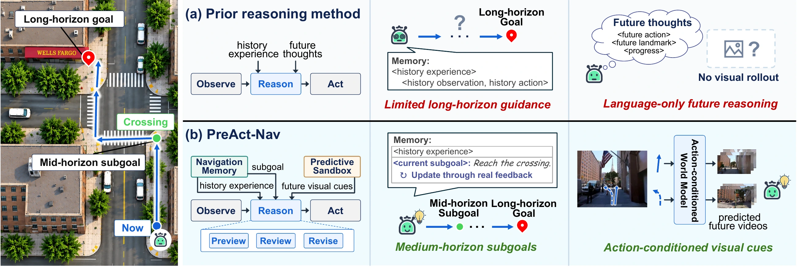
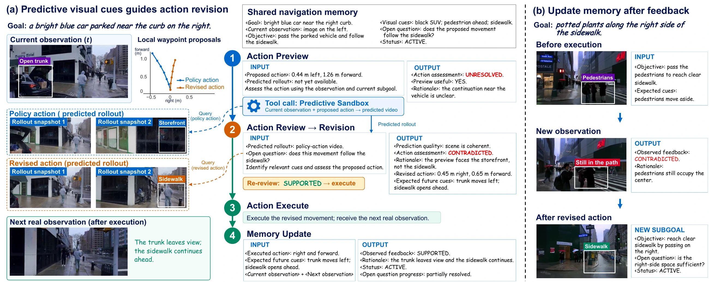
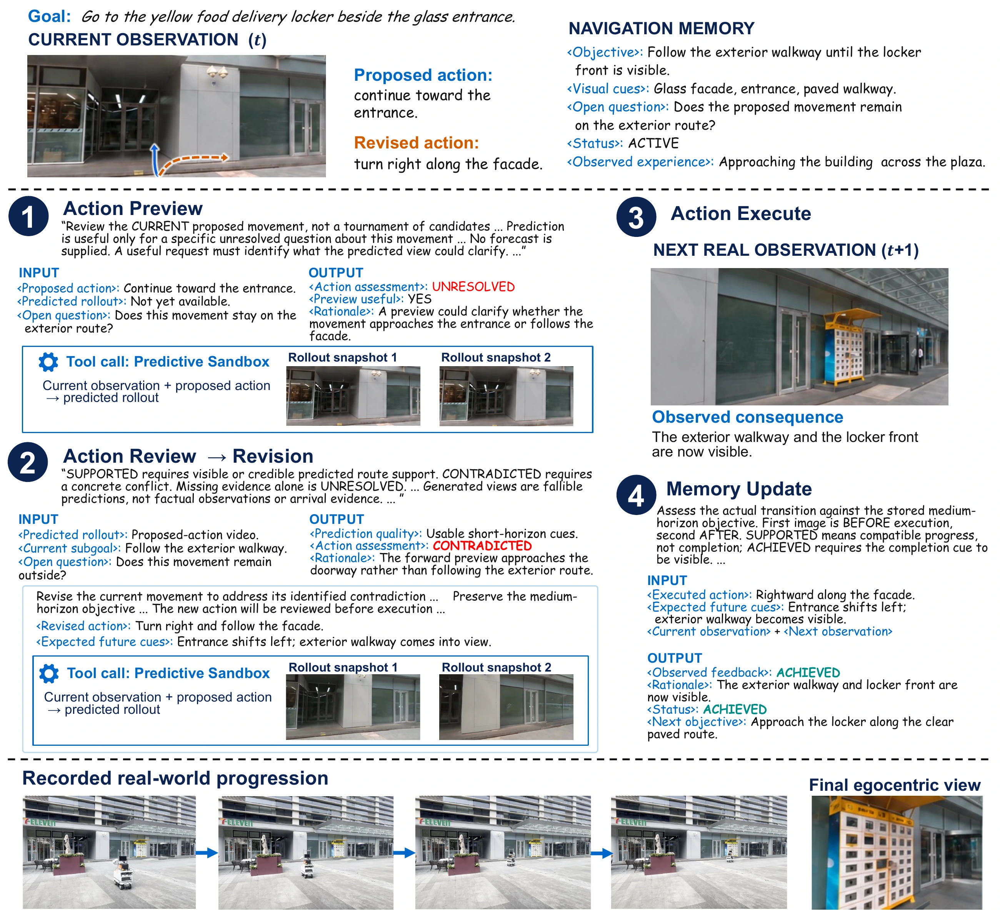
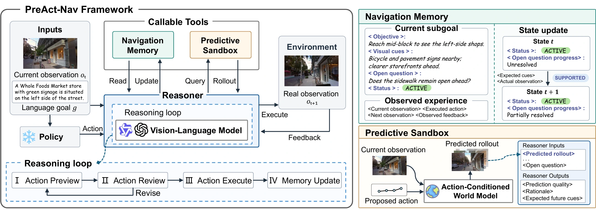
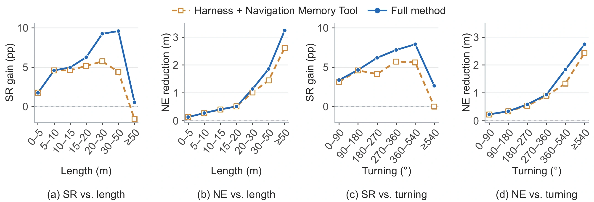

UrbanNav
78.14%to83.38%
+5.24 percentage points
1 MoE Key Lab of Artificial Intelligence, Institute of AI, School of Computer Science,
Shanghai Jiao Tong University, Shanghai, China
6 Intelligent Game and Decision Lab (IGDL), Beijing, China
PreAct-Nav equips a frozen navigation policy with a reasoning loop that considers the consequences of an action before executing it. Navigation Memory maintains the current subgoal and observed experience; a Predictive Sandbox provides future visual cues when they can resolve an open question.

Predicted views can reveal why a proposed movement should change. After execution, real observations determine whether the current subgoal still holds.


The robot’s destination is a yellow food-delivery locker beside a glass entrance. Its current subgoal is to follow the building exterior until the locker front becomes visible.
The policy-action preview approaches the doorway. The reasoner instead selects a rightward movement along the facade. The next real camera observation reveals the exterior walkway and locker front, completing the intermediate subgoal.
This is an online, closed-loop qualitative case. Predicted rollouts are generated before execution; observed frames come from the robot’s camera. Completing this subgoal does not mean the final destination has been reached.
Select a figure to view it at full size.
One shared VLM coordinates Navigation Memory and the Predictive Sandbox around a frozen navigation policy. All pretrained model weights remain frozen.

Assess the proposed movement using real observations and memory. Query the sandbox when predicted visual evidence could resolve uncertainty.
Check the movement against the current subgoal. Revise a contradicted proposal and review the new action within the reasoning budget.
Execute a supported action. If no proposal is supported, retain the original policy action.
Compare the next real observation with expected cues. Record the outcome and continue or reformulate the subgoal.
We compare reasoning methods under a shared evaluation protocol within each task. UrbanNav uses 4,179 test-seen and 4,634 test-unseen episodes; CityWalker uses 154 routes from nine recordings. Both use a three-metre success radius.
PreAct-Nav · UrbanNav · Test-unseen · Qwen3.8-27B
83.38%
Success rate
77.87%
SPL
5.34m
Navigation error
+5.24 percentage points in success rate over the frozen UrbanNav policy.
| Method | SR (%) ↑ | SPL (%) ↑ | NE (m) ↓ | nDTW (%) ↑ | SDTW (%) ↑ | OSR (%) ↑ |
|---|---|---|---|---|---|---|
| UrbanNav | 78.14 | 74.73 | 5.9659 | 87.73 | 76.13 | 84.92 |
| Direct VLM | 79.05 | 75.58 | 5.9187 | 88.02 | 76.99 | 85.63 |
| NavGPT | 79.11 | 75.65 | 5.9017 | 88.09 | 77.06 | 85.67 |
| Open-Nav | 79.24 | 75.77 | 5.8964 | 88.11 | 77.18 | 85.74 |
| DiscussNav | 78.90 | 75.00 | 5.8659 | 88.19 | 76.94 | 85.69 |
| EvoNav | 78.87 | 74.59 | 5.8376 | 88.16 | 76.91 | 85.58 |
| PreAct-Nav | 83.38 | 77.87 | 5.3353 | 90.47 | 81.30 | 90.12 |
All methods use the frozen UrbanNav policy. Reasoning methods shown here use Qwen3.8-27B. Values are those reported in the manuscript.
SR: success rate. SPL: success weighted by path length. NE: final navigation error in metres. nDTW: normalized dynamic time warping. SDTW: success weighted by nDTW. OSR: oracle success rate. Higher is better except for NE.
Test-unseen on UrbanNav, with Qwen3.8-27B as the shared reasoner. Success-rate gains are measured against each corresponding frozen policy.
78.14%to83.38%
+5.24 percentage points
76.33%to79.11%
+2.78 percentage points
82.65%to86.23%
+3.58 percentage points
The full method improves success rate and reduces navigation error in every reported route interval. Gains in success rate reach 9.60 points on 30–50 m routes and 7.92 points on routes with 360–540° of cumulative turning.

Preprint available at arXiv:2610.04916.
@misc{xie2026preactnav,
title = {PreAct-Nav: Agentic Reasoning Before Action
for Urban Navigation},
author = {Xie, Jing and Ruan, Shouwei and Wang, Yubin and
Zhang, Yuxiang and Yang, Junwei and Jin, Songchang and Shi, Dianxi},
year = {2026},
eprint = {2610.04916},
archivePrefix = {arXiv},
primaryClass = {cs.RO},
url = {https://arxiv.org/abs/2610.04916}
}